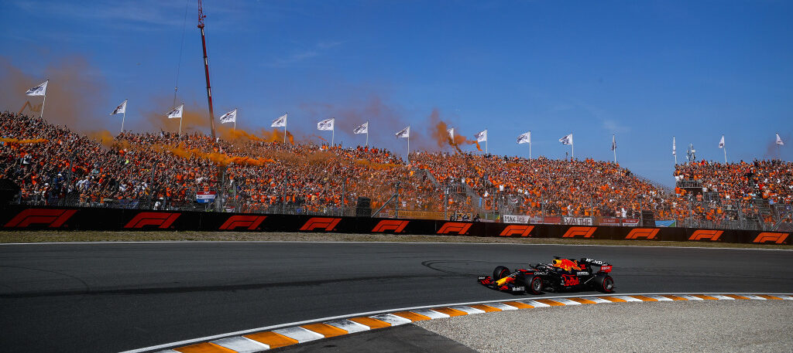
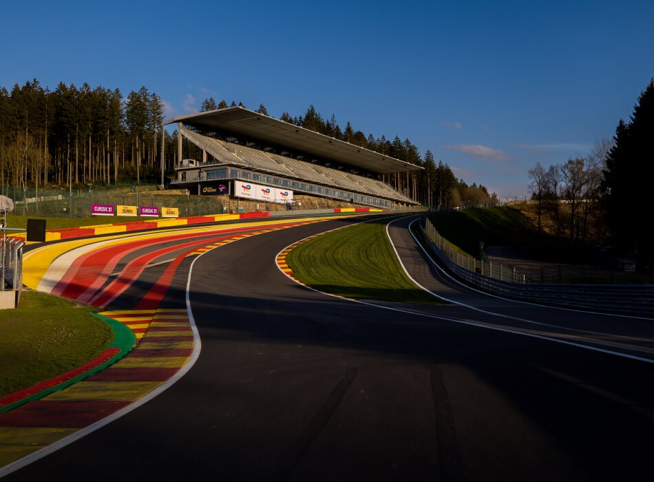

Zandvoort

Zandvoort is het Nederlandse circuit dat sinds 2021 weer terugkeert op de Formule 1-kalender na een afwezigheid van meer dan 35 jaar. Het circuit ligt direct aan de kust en staat bekend om zijn unieke duinlandschap en snelle, vloeiende bochten zoals de Tarzanbocht en Scheivlak. De lengte van het circuit is 4,259 kilometer en een race bestaat meestal uit 72 ronden. Zandvoort is technisch uitdagend vanwege de combinatie van hoge snelheden, krappe bochten en beperkte inhaalmogelijkheden. Het circuit heeft ook een modern pitcomplex en tribunes die plaats bieden aan tienduizenden toeschouwers, waardoor het een populaire locatie is voor zowel coureurs als fans. Het trekt veel aandacht van Nederlandse fans, vooral door de aanwezigheid van Max Verstappen, die vaak hoge prestaties op dit circuit levert.
Monaco

Het Circuit van Monaco is een van de beroemdste en meest iconische circuits in de Formule 1. Het stratencircuit loopt door de straten van Monte Carlo en La Condamine en staat bekend om zijn nauwe bochten, hoogteverschillen en minimale uitloopzones, waardoor inhalen extreem lastig is. Het parcours is 3,337 kilometer lang en een race bestaat meestal uit 78 ronden. Beroemde bochten zijn onder andere de Hairpin, de Sainte Dévote en de Grand Hotel bocht. Monaco staat niet alleen bekend om de technische uitdaging voor coureurs, maar ook om zijn glamour, met tribunes langs jachthavens, luxe hotels en casino’s. Het circuit is een van de weinige in de F1 waar de kwalificatie vaak belangrijker is dan de race, vanwege de beperkte inhaalmogelijkheden.
Silverstone

Silverstone is een historisch Formule 1-circuit in het Verenigd Koninkrijk en staat bekend als het “thuis” van de Britse Grand Prix. Het moderne circuit is 5,891 kilometer lang en een race bestaat meestal uit 52 ronden. Silverstone combineert snelle rechte stukken met uitdagende bochten zoals Maggotts, Becketts en Chapel, die precisie en hoge snelheid vereisen. Het circuit heeft een rijke geschiedenis, want hier werd in 1950 de allereerste Formule 1 Grand Prix ooit verreden. Silverstone trekt jaarlijks tienduizenden fans en staat bekend om zijn enthousiaste Britse publiek. Door de mix van snelheid, technische secties en veranderlijk weer is het een circuit dat coureurs veel vraagt en vaak spectaculaire races oplevert.
Spa-Francorchamps

Spa-Francorchamps is een legendarisch Formule 1-circuit in de Ardennen van België, beroemd om zijn natuurlijke hoogteverschillen en uitdagende bochten. Het circuit is 7,004 kilometer lang, waardoor het een van de langste banen op de kalender is, en een race bestaat meestal uit 44 ronden. Spa staat bekend om iconische bochten zoals Eau Rouge, Raidillon en Pouhon, die precisie en moed van de coureurs vereisen. Het weer op Spa kan extreem wisselvallig zijn, waardoor regen vaak een belangrijke factor in de races wordt. Het circuit heeft een rijke historie in de Formule 1 en trekt jaarlijks veel fans, die genieten van spectaculaire races in een bosrijke omgeving. Spa-Francorchamps wordt gezien als een van de meest uitdagende en indrukwekkende circuits ter wereld.
Monza

Monza, gelegen net buiten Milaan in Italië, is een van de snelste en oudste circuits op de Formule 1-kalender. Het circuit staat bekend als het “Temple of Speed” vanwege de lange rechte stukken en hoge snelheden die coureurs hier kunnen bereiken. Monza is 5,793 kilometer lang en een race bestaat meestal uit 53 ronden. Beroemde bochten zijn onder andere Lesmo 1 en 2, Variante Ascari en de Parabolica, die precisie en remtechniek vereisen. Het circuit trekt jaarlijks tienduizenden enthousiaste Italiaanse fans, bekend als de “tifosi”, die zorgen voor een bijzondere sfeer langs de baan. Door de hoge snelheid, korte pitstops en het strategische bandenbeheer levert Monza vaak spectaculaire en spannende races op.
De feitjes op een rijtje
| Locatie | Bouwjaar | Lengte | Raceafstand |
|---|---|---|---|
| Zandvoort (Nederland) | 1948 | 4,259 km | 306,587 km |
| Monaco (Monte Carlo) | 1929 | 3,337 km | 260,286 km |
| Silverstone (Groot-Brittannië) | 1947 | 5,891 km | 306,198 km |
| Spa-Francorchamps (België) | 1921 | 7,004 km | 308,052 km |
| Monza (Italië) | 1922 | 5,793 km | 306,720 km |